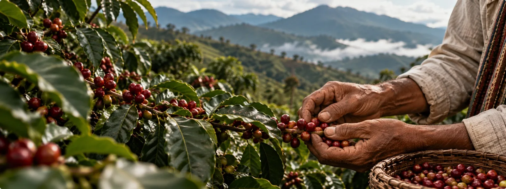

Cada grano tiene una historia, conectamos su origen con el mundo.
Descubre las historias detrás de cada finca, conoce a quienes cultivan nuestro café y explora sus orígenes. Una plataforma donde la tradición cafetera, la trazabilidad y la cooperación solidaria abren caminos hacia nuevos mercados.
Dónde nace nuestro café
Las asociaciones del ecosistema están en siete municipios del Tolima. Toca cualquier municipio del Tolima para ver su información, o aleja el mapa para verlo dentro de Colombia.
Límites municipales: DANE, Marco Geoestadístico Nacional 2018.
Del cafetal al comprador, en siete pasos
Cada paso tiene un responsable claro y reglas que protegen al productor, a la asociación y al comprador. Toca cada etapa para ver quién responde y qué se controla.
Cada lote cuenta su historia con un código QR
El comprador consulta la ficha autorizada del lote: origen por zona, proceso, trilla con balance de masa, bodega y despacho. La ubicación exacta de la finca no se publica sin autorización del productor.
Novedades del ecosistema
Las 10 asociaciones del ecosistema
Organizaciones de pequeños caficultores de siete municipios del Tolima. Toca una para conocer su café.
Una apuesta colectiva de 10 asociaciones cafeteras
Comercialización conjunta, trazabilidad verificable, gestión financiera separada por organización y educación para los productores asociados.
Una sola solución para la oferta de las asociaciones
El ecosistema integra el registro de productores, fincas y lotes; la trilla, el almacenamiento y el despacho; la atención a compradores nacionales e internacionales; las ventas por mandato y las liquidaciones; las campañas de promoción y la formación digital de los productores.
La comercialización se hace desde una Unidad Comercial Conjunta. Cada asociación conserva su autonomía sobre productores, lotes, inventarios, trilla, bodega, transporte y pago a sus caficultores.
Fortalecer la autonomía económica, la asociatividad y el desarrollo sostenible de los pequeños caficultores colombianos mediante un ecosistema digital de propiedad y gestión colectiva que integre asociaciones cafeteras de diferentes regiones del país, facilite el acceso a mercados nacionales e internacionales y promueva la trazabilidad, la transparencia, la formación y la cooperación solidaria.
Objetivos de la plataforma
Tres metas medibles para los primeros 36 meses del ecosistema.
Quién hace qué, y hasta dónde
Cada actor tiene una responsabilidad principal y un límite que protege a los demás.
Decisiones compartidas, operación sin bloqueos
Las decisiones estratégicas requieren la aprobación de ambas asociaciones. Las ordinarias se votan o se delegan. Si hay desacuerdo, la operación válida continúa.
Si hay un bloqueo estratégico
Lo que ya acordamos
Por etapas, empezando por lo esencial
Qué incluye y qué no
Términos del ecosistema
Nuestro café: pergamino seco y verde
Lotes identificados por asociación, con trazabilidad autorizada. No publicamos precios: cada negociación se hace con una cotización privada.
Dos productos, un mismo origen
Lotes disponibles
Consulta la historia de un lote
Así verá el comprador la ficha a la que lleva el QR del empaque. Elige un lote de ejemplo.
Ventas, muestras y despachos
Solicita una cotización privada
Pide por lotes específicos o describe lo que necesitas. La Unidad Comercial Conjunta revisa la oferta de ambas asociaciones y te responde con una oferta privada.
¿Cómo hacer parte del ecosistema?
Si eres productor de café en el Tolima y perteneces, o quieres pertenecer, a una de las asociaciones, aquí te explicamos qué ganas y cómo vincularte.
Beneficios para el productor
Toda tu información, en un solo lugar
Cada productor tendrá su propia cuenta para consultar su café, sus ventas y sus pagos. Vista de ejemplo:
Formación exclusiva para asociados
Cada asociación administra sus propios cursos, presenciales y virtuales. Los contenidos aprobados se pueden compartir de forma voluntaria en la Biblioteca Cafetera Digital, privada para los productores de ambas asociaciones. Tu progreso y tus evaluaciones siguen siendo de tu asociación.
Cómo vincularte
Contacta a tu asociación
Comunícate con nosotros
Escríbenos si quieres vincularte, tienes dudas sobre tu cuenta o quieres proponer un curso.
Noticias, documentos y sesiones de trabajo
Lo que avanza en la construcción del ecosistema, publicado para las asociaciones, los productores y los aliados.